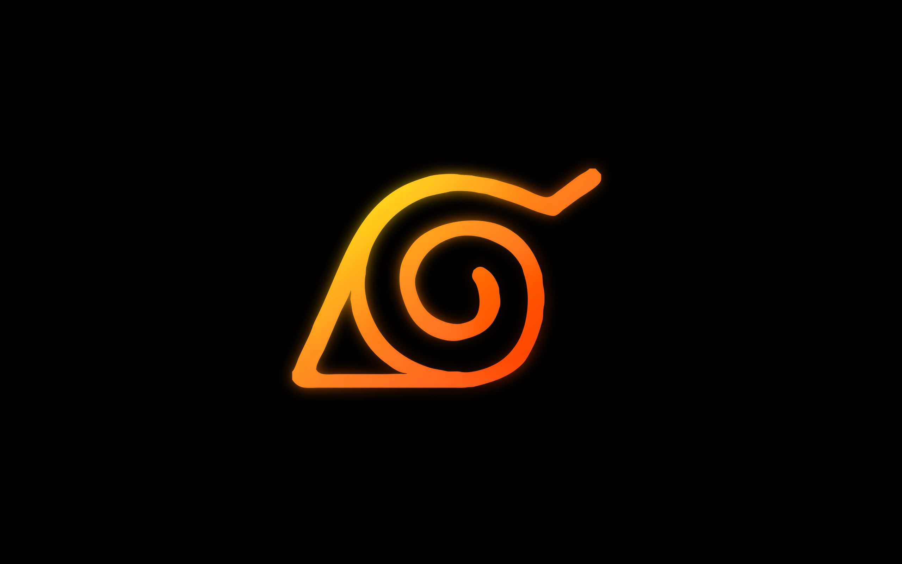
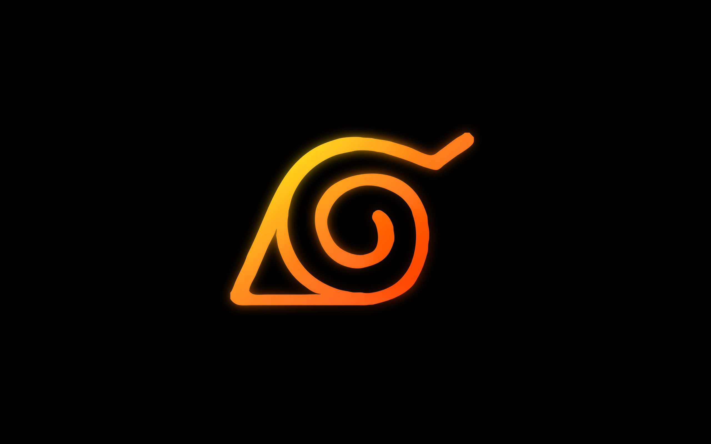

About Naruto Uzumaki
Naruto Uzumaki's chakra is an immense life force that grants him extraordinary stamina, resilience, and access to unique transformations. With it, he harnesses Kurama's might, a legendary beast sealed within him, amplifying strength and speed. His energy develops into Sage Mode, enhancing sensory skills and physical capability. Eventually, he attains Six Paths power, gaining divine-level techniques and becoming among the greatest warriors in the shinobi world.